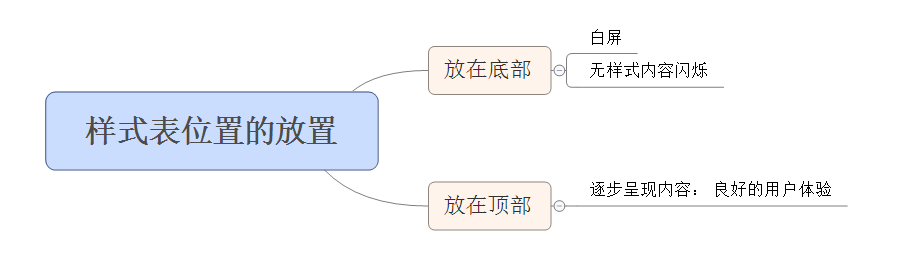

逐步呈现
我们都希望浏览器能够尽快显示内容，为用户提供可视化回馈！
进度指示器有三个优势——它们让用户知道系统没有崩溃，只是正在为他或她解决问题；它们指出了用户大概还需要等多久，以便用户能够在漫长的等待中做些其他事情；最后它们能给用户提供一些可以看的东西，使得等待不再是那么无聊。最后推荐使用图形进度条而不是仅仅以数字形式显示预期的剩余时间。
——可用性工程师先驱
在这里，HTML页面就是进度指示器，当浏览器逐步地加载页面时，页头、导航栏、顶端logo等，所有这些都会为等待页面的用户提供视觉反馈。可改善整体用户体验。
将样式表放在文档底部会导致在浏览器中阻止内容逐步呈现。为避免当样式变化时重绘页面中的元素，浏览器会阻塞内容逐步呈现。
将 CSS 放在底部
逐步呈现被禁止了，这是一种不好的用户体验，因为没法向用户确保他的请求正在被正确地处理，用户会因为不知道发生了什么而离开。
在IE中样式表放在文档底部会导致白屏问题的情形有以下几种：
- 在新窗口中打开时
- 重新加载时
- 作为主页
将 CSS 放在顶部
为避免白屏，将 CSS 放在顶部，不管页面时如何加载的页面都是逐步呈现的。
将样式表包含在文档中有两种方式“
- 使用 LINK 标签
- @import 规则
@import 规则的缺点：
- 使用 @import 规则会导致组件下载时的无序性
- @import 规则有可能会导致白屏现象，即便把 @import 规则放在文档的 HEAD 标签中也是如此
- @import 规则必须放在所有其他规则之前
最优的方式：使用 LINK 标签将样式表放在文档的 HEAD 中
白屏
在浏览器和用户等待位于底部的样式表时，浏览器会延迟显示任何可视化组件，这一现象称之为白屏。
将样式表放在文档底部出现白屏现象只出现在IE浏览器中。白屏现象源自于浏览器的行为。
无样式内容闪烁
无样式内容的闪烁(FOUC)： 文档为样式表使用了一个 CSS 规则，但样式表被（不正确地）放在了底部。当页面逐步加载时，文字首先显示，然后是图片。最后，在样式表正确地下载并解析之后，已经呈现的文字和图片要用新的样式重绘了。
对于白屏和无样式内容闪烁，我们该怎么办？
对于两种浏览器在不同的情况下的总结
Firefox
样式表位于顶部：页面内容逐步呈现
样式表位于底部：
- 与页面呈现内容无关：页面内容逐步
- 呈现与页面呈现内容有关：出现无样式内容闪烁
IE
样式表位于顶部：逐步加载
样式表位于底部：
- 出现白屏：当重新加载页面、将页面设置为默认首页并打开、在新窗口中打开页面时出现
- 出现FOUC：点击链接、键入URL、使用书签 打开页面时
解决两种的最佳方案： 使用 LINK 标签将样式表放在文档 HEAD 中
附上本节总结
